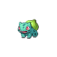

| Stats Base al nivel 50 | ||
|---|---|---|
| PS | 45 | 105-152 |
| Ataque | 49 | 48-111 |
| Defensa | 45 | 48-111 |
| Ataque Especial |
65 | 63-128 |
| Defensa Especial |
65 | 63-128 |
| Velocidad | 45 | 48-111 |
| Evolución | ||
|---|---|---|
| Inicial | Nivel 16 | Nivel 32 |
| 001 Bulbasaur | |||||
|---|---|---|---|---|---|
| Imagen | Tipo | Planta | Veneno | ||
|  | Descripción | Tras nacer, crece alimentándose durante un tiempo de los nutrientes que contiene el bulbo de su lomo. | |||
| Localización | Bosque verde | nivel 10 |
Se necesita señuelo | ||
| Evolución | Bulbasaur evoluciona a Ivysaur en el nivel 16 y a Venusaur al nivel 32 |
Habilidad | Principal:Espesura Oculta: Clorofila |
||
| Stats Base al nivel 50 | ||
|---|---|---|
| PS | 45 | 105-152 |
| Ataque | 49 | 48-111 |
| Defensa | 45 | 48-111 |
| Ataque Especial |
65 | 63-128 |
| Defensa Especial |
65 | 63-128 |
| Velocidad | 45 | 48-111 |
| Evolución | ||
|---|---|---|
| Inicial | Nivel 16 | Nivel 32 |